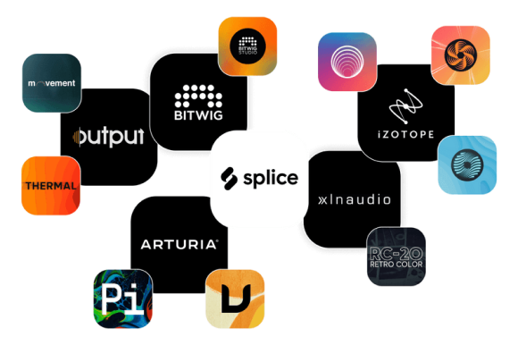

Hidden title
🤘 Get free Sounds when you start a trial & 4 months off a Sounds+ annual plan.
Click hereStep into the producer’s playground
Explore the world’s best sample library and an unmatched marketplace of plugins and DAWs.
Learn moreSounds
A catalog so deep, it’s dangerous.
Expertly created and curated samples in any style imaginable. Start swimming in sound.


Connected Experience
A workflow that actually flows.
Preview samples in your track’s key and tempo, drag and drop sounds into your DAW, and organize your favorite samples, MIDI and presets in one place.
Gear
Build a drool-worthy studio, affordably.
The industry’s top software, all in one place, on payment plans built to work for you.

Technology
Crate dig without the dust.
Our intelligent search tools help you discover sounds you would normally have to dig to find. Tech breaks the sweat, not you.
What creators are saying about Splice
-
I can always find what I’m looking for on Splice, whether it’s the exact sound I want or just a bit of inspiration.
Andrew Huang -

Finally a way to buy plugins that works. By paying a little at a time, producers can get legit access to the top VSTs.
KSHMR -
It’s been fun to dive into Splice’s creator community and explore tools that support my own creative process.
Kesha Lee